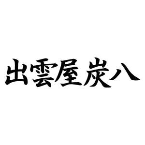

Trade Mark Journal No.2025/046 14 November 2025
UK00004261609 9 September 2025 (1,5,17,19)

- Class 1
- Moisture control agent using charcoal; chemical absorbents; absorbent products consisting of activated charcoal; industrial deodorizers using charcoal; natural desiccants for the control of humidity; desiccants for absorbing moisture; carbides; humidity controlling agents using charcoal; humidity absorbing and desorbing agents using charcoal; humidity controlling agents using charcoal which absorb or release moisture for use in controlling humidity; mildew proofing agents using charcoal; adsorbents using charcoal; deodorizers for industrial purpose using charcoal; odor eliminator for industrial use using charcoal; water purifying agents using charcoal; soil improving agents made from charcoal; plant growth regulating preparations made from charcoal; fertilizers made from charcoal; chemicals; glue and adhesives for industrial purposes; plant growth regulating preparations; fertilizers; ceramic glazings; priming putty; higher fatty acids; non-metallic minerals; chemical compositions for developing and printing photographs; reagent paper [not for medical purposes]; artificial sweeteners; flour and starch for industrial purposes; plastics [raw materials]; groundwood pulp or chemical pulps for manufacturing purposes.
- Class 5
- Charcoal deodorants (excluding industrial, body and animal deodorants and halitosis deodorants); deodorants based on charcoal, not for industrial purposes; deodorants using charcoal (excluding industrial, body and animal deodorants and halitosis deodorants); deodorants, other than for human beings or for animals; air deodorizing preparations comprised of activated charcoal; odour absorbing materials; deodorizers made of charcoal, other than for industrial purpose, for human being, for animals and for halitosis purpose; charcoal for pharmaceutical purposes; insect repellents using charcoal; deodorizers using charcoal, other than for industrial purpose; deodorizers using charcoal, other than for industrial purpose, for human being, for animals and for halitosis purpose; pharmaceutical preparations and preparations for destroying vermin; fungicides; herbicides; reagent paper for medical purposes; oiled paper for medical purposes; adhesive tapes for medical purposes; drug delivery agents in the form of edible wafers for wrapping powdered pharmaceuticals; gauze for dressings; empty capsules for pharmaceuticals; eyepatches for medical purposes; ear bandages; menstruation bandages; menstruation tampons; sanitary napkins; sanitary panties; absorbent cotton; adhesive plasters; bandages for dressings; liquid bandages; breast-nursing pads; cotton swabs for medical use; dental materials; diapers; diaper covers; fly catching paper; mothproofing paper; lacteal flour for babies; dietary supplements for human beings; dietetic beverages adapted for medical purposes; dietetic foods adapted for medical purposes; beverages for babies; food for babies; dietary supplements for animals; semen for artificial insemination.
- Class 17
- Moisture-proofing materials for building using charcoal; humidity control materials for building or construction, of charcoal; insulating materials for insulation against moisture; floor insulating materials with humidity control effect using charcoal; substances for insulating buildings against moisture; waterproofing and moisture proofing articles and materials; insulating water proofing membranes; insulating materials for buildings; sealing and insulating materials; insulating materials for insulation against heat; non-conducting materials for retaining heat; thermal insulating materials; insulating refractory materials; substances for insulating buildings against moisture using charcoal; humidity controlling materials for building or construction made of charcoal; humidity absorbing and desorbing material for building or construction made from charcoal; humidity controlling material for building or construction made of charcoal that absorb or release moisture for use in controlling humidity; insulators; electrical insulating materials; rock fiber; slag wool; semi-worked plastic products; rubber [raw or semi-worked]; soundproofing materials of rock fiber, not for building purposes; Building insulation using charcoal; building insulation materials using charcoal with a deodorizing effect; building insulation materials using charcoal with a humidity control effect; building insulation materials using charcoal with humidity absorption and desorption effect; soundproofing materials for building using charcoal; sound absorbing materials for building using charcoal.
- Class 19
- Special material for building or construction with charcoal; special material for building with humidity control effect using charcoal; building and construction materials (not of metal) for controlling humidity; channels of non-metallic materials for transmitting air for ventilation; thermal insulating glass for use in building; non-metal cladding for construction and building; building insulation materials using charcoal; materials for building or construction using charcoal; building materials using charcoal with a humidity control effect; building materials using charcoal with humidity absorption and desorption effect; non-metallic minerals for building or construction; ceramic building materials, bricks and refractory products; building materials made of linoleum for fixing to existing walls or floors; plastic building materials; synthetic building materials; asphalt, and asphalt building or construction materials; rubber building or construction materials; plaster for building purposes; lime building or construction materials; building or construction materials of plaster; rockslide retention nets of textiles [construction materials]; buildings, not of metal; erosion control mats integrating plants seeds; plastic security windows allowing communication; road and field marking sheets and strips; building timber; building stone; building glass; poultry houses, not of metal; paint spraying booths, not of metal; moulds for forming cement products, not of metal; road signs, not of metal, non-luminous and non-mechanical; beacons [not of metal, non-luminous]; letter boxes of masonry; joinery fittings, not of metal; outdoor blinds, not of metal or textile; stone lanterns; transportable greenhouses, not of metal, for household use; gravestones and tomb plaques, not of metal; stone sculptures; concrete sculptures; marble sculptures.
IZUMO DOKEN CO., LTD.
Representative: Cleveland Scott York